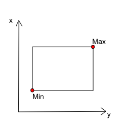

http://navigator.oceansdata.ca/api/variables/?dataset=giops_day&3d_onlyWhen scripting, longer queries should be written in JSON and converted to encodedURI format (2) Template Parameters Template based parameters differ from query based parameters in various ways: - Parameter Order Matters - Parameter values are separated by '/' -Input paramater types must match expected parameter types This means you cannot provide an iteger if the query is expecting a string. The expectations for each query are outlined in the documentation below. Example:
? : beginning of parameter input dataset : parameter with assigned value =giops_day : assigning value to dataset & : indicates next parameter 3d_only : standalone parameter (no value)
http://navigator.oceansdata.ca/api/class4/forecasts/class4_20180531_GIOPS_CONCEPTS_2.3_profile format: /api/class4/<string:q>/<string /api/class4/ : Base <string:q> : 1st Parameter Value <string:class4_id> : 2nd Parameter ValueAPI Queries can be tested by copying and pasting the query into a browser, or can be automated by constructing them in a script
from PIL import ImageThis will save an image for each time stamp in the specified range **Example written in python3**#Library used to save imagesimport urllib#Library used to convert and open URL's#Constructs the JSON query - each line is a variable: value pairquery = { "scale": "-1.6,5", "depth_limit": False, "colormap": "default", "dataset": "glorys3", "showmap": True, "variable": "votemper", "surfacevariable": "none", "time": 207, "quantum": "month", "path": [[47.649768922115356, -52.60316173355579], [45.227624722564485, -48.53822032730579]], "type": "transect", "linearthresh": 200, }#Loops through 10 different timestampsfor t in range(0,10)#In practice, the range would be a valid time formatquery['time'] = t#Sets the time portion of the query#Constructs the URLurl = "http://navigator.oceansdata.ca/plot/?" + urlliv.urlencode({ "query": json.dumps(query),#Converts the query from JSON to encodedURI"dpi" : "72", "size" : "10x7", })#Opens the URL / Sends the API Requestwith closing(urllib.urlopen(url)) as f: img = Image.open(f) images.save("image" + str(t) + ".png", "PNG")#Saves the image as image{#}.png
import urllib
base_url = "http://navigator.oceansdata.ca/api/v1.0/depth/"
dataset = 'giops_day'
variables = ['votemper', 'vosaline', 'vozocrtx', 'vomecrty']
for variable in variables:
url = ('{}?dataset={}&variable={}'.format(base_url, dataset, variable))
f = urllib.urlopen(url)
output = f.read()
print(output)
**Example written in python3**
(2) String Concatenation
In this example, the variables are incorporated directly in place, and are concatenated together in the order they appear
The text given in quotations "..." are hardcoded strings which will become part of the query
import urllib dataset = giops_day variables = [votemper, vosaline, vozocrtx, vomecrty] for variable in variables: url = "http://navigator.oceansdata.ca/api/v1.0/depth/?dataset=" + dataset + "&variables=" + variable f = urllib.urlopen(link) output = f.read() print(output)**Example written in python3**
Dataset Information |
Request:
/api/v1.0/datasets/
Description:
Will return a list of possible datasets and their corresponding dataResponse:
Request:
/api/v1.0/datasets/?id
Description:
Will return a list of Dataset names and their corresponding id'sResponse:
Request:
/api/v1.0/variables/?dataset=<dataset_id>&3d_only&vectors_only&vectors
Description:
example: /api/v1.0/variables/?dataset=giops_day **Only use variables required for your specific request** dataset_id : Dataset to extract data - Can be found using /api/datasets/id 3d_only : When included, ONLY variables with depth will be shown vectors_only : When included, ONLY variables with magnitude will be shown vectors : When included, magnitude components will be included **Boolean: True / False** Will return a list of variables in the specified dataset, this output can be filtered by including keywords in the queryResponse:
Request:
/api/v1.0/observationvariables/
Description:
example: /api/v1.0/observationvariables/ Returns a list of the possible observation variablesResponse:
Request:
/api/v1.0/timestamps/?dataset=<string:dataset>
Description:
example: /api/v1.0/timestamps/?dataset=giops_day <string:dataset> : Dataset id - Can be found using /api/datasets Finds all timestamps associated with a datasetResponse:
Request:
/api/v1.0/depth/?dataset=<string:dataset_id>&variable=<string:variable>
Description:
example: /api/v1.0/depth/?dataset=giops_day&variable=votemper <dataset_id> : id of the desired dataset - Can be found using /api/datasets/id <variable> : Type of data to retrieve - found using /api/variables/?dataset='...' Returns all depths available for that variable in the datasetResponse:
Request:
/api/v1.0/scale/<string:dataset>/<string:variable>/<string:scale_min, scale_max>.png
Description:
example: /api/v1.0/scale/giops_day/votemper/-5,30.png <string:dataset> : Dataset id - found using /api/datasets/id <string:variable> : Type of data to retrieve - found using /api/variables/?dataset='...' <string:scale_min,scale_max> : Desired Scale Returns a coloured scale bar using the provided scaleResponse:
Request:
/api/v1.0/range/<string:dataset_id>/<string:variable>/<string:interp>/<string:radius>/<string:neighbours>/<string:projection>/<string:extent>/<string:depth>/<string:time>.json
Description:
example: /api/v1.0/data/giops_day/votemper/823/0/63.51801708389351,-56.13861083984375.json <string:interp> : Dataset id - Can be found using /api/v1.0/datasets/?id <string:radius> : Type of data to retrieve - found using /api/v1.0/variables/?dataset='...' <int:neighbours> : Time of data collection <string:dataset_id> : Water Depth - found using /api/v1.0/depth/?dataset='...' <string:Lat,Lon> : Location of the data you want to retrieve **All Components Must be Included** Returns JSON object containing the location, name, units, and value based on the input valuesResponse:
Request:
/api/v1.0/data/<string:dataset>/<string:variable>/<string:time>/<string:Depth>/<string:location>.json'
Description:
example: /api/v1.0/data/giops_day/votemper/823/0/63.51801708389351,-56.13861083984375.json <string:dataset> : Dataset id - Can be found using /api/v1.0/datasets/?id <string:variable> : Type of data to retrieve - found using /api/v1.0/variables/?dataset='...' <string:time> : Timestamp of data collection <string:Depth> : Water Depth - found using /api/v1.0/depth/?dataset='...' <string:Lat,Lon> : Location of the data you want to retrieve **All Components Must be Included** Returns JSON object containing the location, name, units, and value based on the input valuesResponse:
Request:
/api/v1.0/class4/<string:q>/<string:class4_id>/
Description:
example: /api/class4/models/class4_20180512_GIOPS_CONCEPTS_2.3_profile/100 <string:q> : forecasts (dates) models (?) <string:class4_id> : ID of the desired class4 - Can be found using /api/v1.0/class4/ Returns in-situ observations with global prediction system estimatesResponse:
Request:
/api/v1.0/drifters/<string:q>/<string:drifter_id>
Description:
example: /api/v1.0/drifters/vars/300234063261890/ <string:q> : vars / time (Data Request) <string:drifter_id> : ID of Drifter of Interest - Options can be found using /api/ Vars - Returns a list of Variables applicable to the specified drifter Time - Returns the max and min time of the specified drifterResponse:
Request:
/api/v1.0/stats/?query=<string:query>
Description:
example: not working <string:query> = { dataset : Dataset id - found using /api/v1.0/datasets/id variable : Type of data to plot - Options found using /api/v1.0/variables/?dataset='...' time : Time retrieved data was observed / modeled depth : Water Depth - found using /api/v1.0/depth/?dataset='...' area : Selected Area } **Query must be written in JSON and converted to encodedURI** **Not all components of query are required Returns a list of statistical variables associated with the plot selected. This may include variable name, units, min, max, mean, median, and stddevResponse:
Request:
/api/v1.0/subset/?query='...'
Description:
example: Click for Example query = { Output Format : File Format Dataset id : id of the desired dataset - found using /api/v1.0/datasets/id Variables : data type ex. temperature - found using /api/v1.0/variables/?dataset='...' Min range : Minimum of bounding box - displayed below Max range : Maximum of bounding box - displayed below time : Data Time Period zip : Takes a value of 1 or 0 [1: create a zip file, 0: do not zip file] } Bounding Box:  **Query must be written in JSON and converted to encodedURI** **Not all components of query are required Returns a subset of data based on the criteria provided, this can be in multiple different file formatsResponse: /api/v1.0/plot/?query=<json:query>
example: Click for Example **MORE DETAILS ABOUT PLOTS CAN BE FOUND HERE <json:query> = { scale : quiver : colormap : area : { u'innerrings': u'polygons' : } bathymetry: True/False - If true, area plots will show bathymetry lines dataset : Dataset id - found using /api/v1.0/datasets/id showarea : If true, the selected area lines will be displayed variable : Type of data to plot - Options can be found in the documentation input section depth : Depth of data to plot (depths available depended on dataset) plottitle : Title of Plot (Default if blank) quantum : (year, month, day, hour) showmap : Include a map of the plots location on the map station : Coordinates of the point/line/area/etc time : Time retrieved data was gathered/modeled contour : { variable : hatch : levels : colormap : legend : } projection: radius : type : Plot Type (Check Navigator for Possible options) } Plot Types - map, transect, timeseries, ts, sound, profile, hovmoller, observation, drifter, class4, stick **Query must be written in JSON and converted to encodedURI** **Not all components of query are required This query is used to create plots of all types, as well as to create some file types including csv
EXAMPLE:
query = {
"dataset": "giops_day",
"names":["50,-48"],
"plotTitle":"",
"quantum":"day",
"showmap":true,
"station":[[50,-48]],
"time":'2018-08-09T00:00+00:00',
"type":"profile",
"variable":"votemper"
}
EXAMPLE:
query = {
"dataset": "giops_day",
"colormap":"default",
"depth_limit":false,
"linearthresh":200,
"path":[[40,-50],[50,45]],
"plotTitle":"",
"quantum":"day",
"showmap":true,
"scale":"-5,30"
"selectedPlots":"1,1,0"
"time":'2018-08-09T00:00+00:00',
"type":"transect",
"variable":"vosaline",
"surfacevariable":"votemper"
}
EXAMPLE:
query = {
"area":[{"innerrings":[],"name":"", "polygons":[[[50,-49],[45,-57],[50,-59],[50,-49]]]}],
"bathymetry":true,
"colormap":"default",
"contour":{"colormap":"default","hatch":false,"legend":true,"levels":"auto","variable":"none"},
"dataset":"giops_day",
"depth":0,
"interp":"gaussian",
"neighbours":10,
"projection":"EPSG:3857",
"quiver":{"colormap":"default","magnitude":"length","variable":"none"},
"radius":25,
"scale":"auto",
"showarea":true,
"time":'2018-08-9T00:00+00:00',
"type":"map",
"variable":"votemper"
}
EXAMPLE:
query = {
"buoyvariable":["sst"],
"dataset":"giops_day",
"depth":0,
"drifter":["300234063263870"],
"endtime":"2017-04-12T10:30:00.000Z",
"latlon":false,
"quantum":"day",
"showmap":true,
"starttime":
"2016-05-17T15:30:48.000Z",
"type":"drifter",
"variable":["votemper"]
}
EXAMPLE:
query = {
"dataset": "giops_day",
"names":["50,-48"],
"plotTitle":"",
"quantum":"day",
"showmap":true,
"station":[[50,-48]],
"time":'2018-08-09T00:00+00:00',
"type":"profile",
"variable":"votemper"
}
/api/v1.0/colors/
Returns a list of colours for use in colour maps /api/v1.0/colormaps/
Returns a list of colourmaps /api/v1.0/colormaps.png
Returns image of colourmap example configurations /api/v1.0/<string:q>/
example: /api/v1.0/lines/ <string:q> : Zone Type Can be (points,lines, areas, or class4) Returns predefined points / lines / areas / class4's /api/v1.0/<string:q>/<string:q_id>.json'
example: /api/v1.0/drifters/meta.json <string:q> : Type of Data (areas, class4, drifters, observation) <string:q_id> : metafile name drifters: meta, observation: meta Returns a list of all the objects of the selected type /api/v1.0/<string:q>/<string:projection>/<int:resolution>/<string:extent>/<string:file_id>.json
example: /api/v1.0/class4/EPSG:3857/9784/-15618972,1596939,4487023,12369057/class4_20180510_GIOPS_CONCEPTS_2.3_profile.json --At this time, only the class4 option is available <string:q> : Type of data (points, lines, areas, class4, drifters, observations) <string:projection> : Current projection of the map (EPSG:3857, EPSG:32661, EPSG:3031) <int:resolution> : Current zoom level of the map <string:extent> : The current bounds of the map view <string:file_id> : Class 4 file ID **All Components Must be Included** **Used Primarily by WebPage** At this time will return a list of class4's and their data |